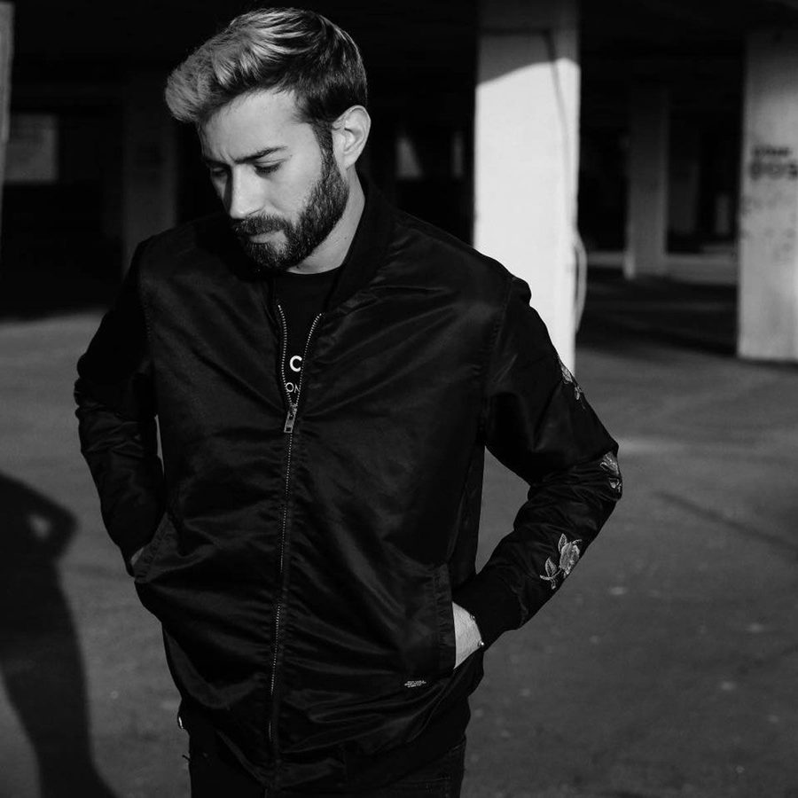

Sean Doron Takes Us Into Deep, Ethereal Territory With “Cala Comte”


We’re helping ring in the New Year with an angelic slice of deep, minimal grooves, courtesy of Israeli producer Sean Doron. The Tel Aviv native is currently fast on the rise after his fellow countryman Guy Gerber picked him up last year as support for his Rumours residency in Ibiza. Doron is now set to drop a lush three-track EP, Cala Comte, on Argentinian imprint Krad Records. To show you what he’s all about, we’re previewing the title track.
“Cale Comte” takes its time to build up to its angelic vibes. Guiding the listener on a seven-minute journey, he channels a floaty, ethereal energy that funnels through several dreamy breakdowns and a haunting use of vocal samples. It’s hypnotizing stuff.
Available January 4 via Krad Records.
Buy “Cala Comte” here.
Follow Sean Doron on Facebook | SoundCloud
Follow Krad Records on Facebook | Twitter | SoundCloud